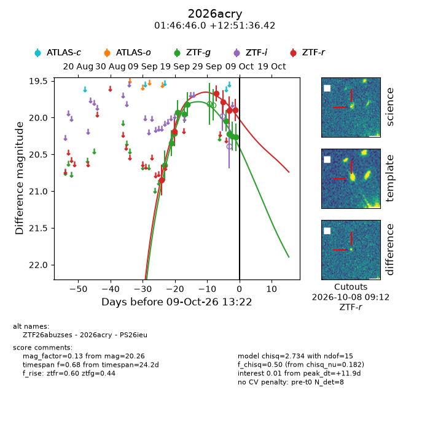
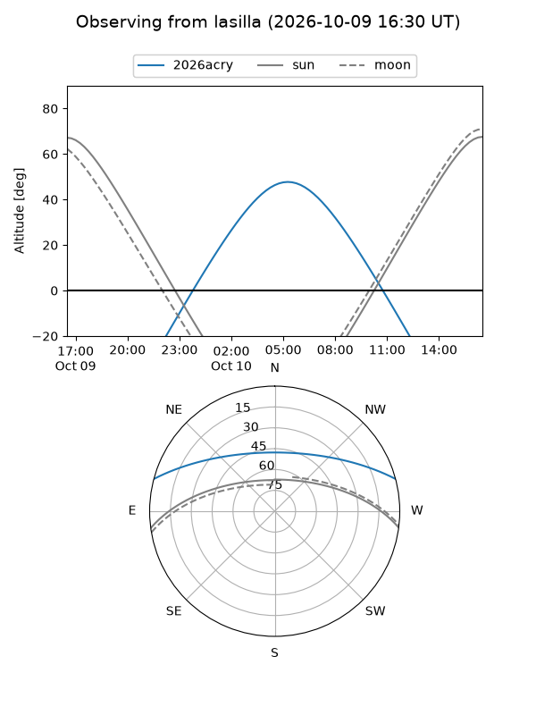
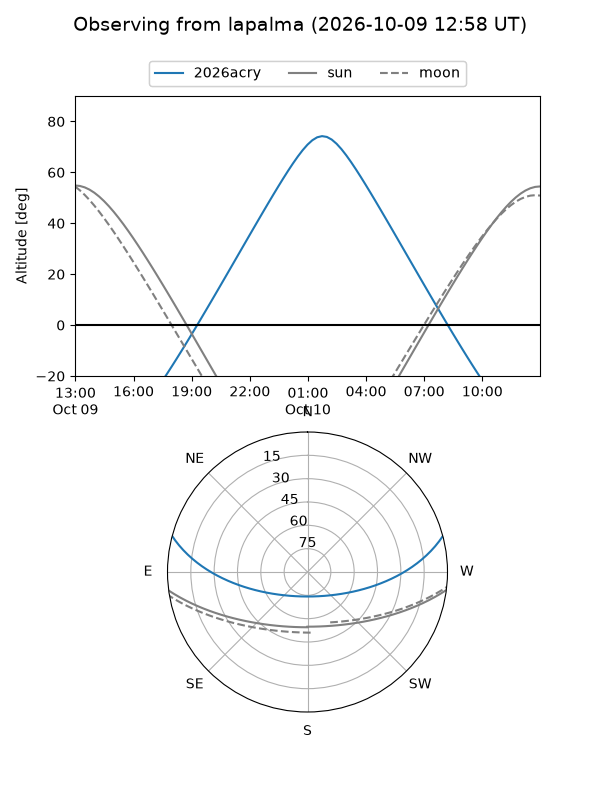
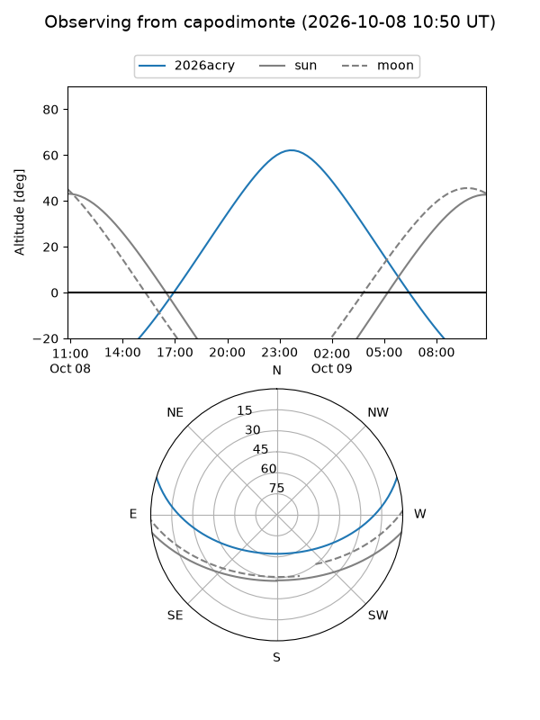
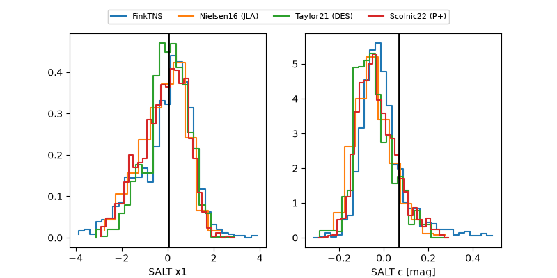

2026acry
Target 2026acry at 2026-10-09 13:25
Aliases and brokers:
FINK-ZTF: ztf.fink-portal.org/ZTF26abuzses
Lasair-ZTF: lasair-ztf.lsst.ac.uk/objects/ZTF26abuzses
ALeRCE-ZTF: alerce.online/object/ZTF26abuzses
YSE-PZ: ziggy.ucolick.org/yse/transient_detail/2026acry
TNS name: wis-tns.org/object/2026acry
Direct TNS query: direct search
alt names
ZTF26abuzses (ztf,fink_ztf)
2026acry (tns,yse)
PS26ieu (panstarrs)
Coordinates:
equatorial (ra, dec) = 26.6918,+12.86012
equatorial (HMS+DMS) = 01:46:46.02,+12:51:36.42
galactic (l, b) = (143.2428,-47.81773)
Flags:
peak dt: +11.9
Photometry:
last ztfg=20.26, ztfr=19.89
10 ztfg, 6 ztfr detections
Lightcurve

Visibility



Additional plots
